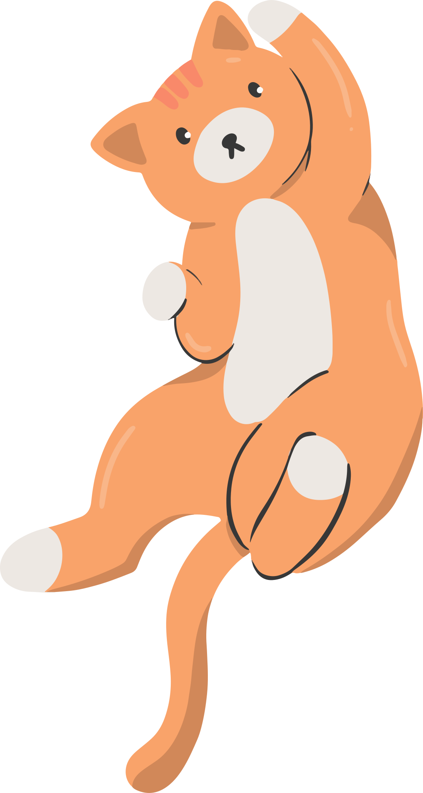
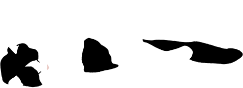
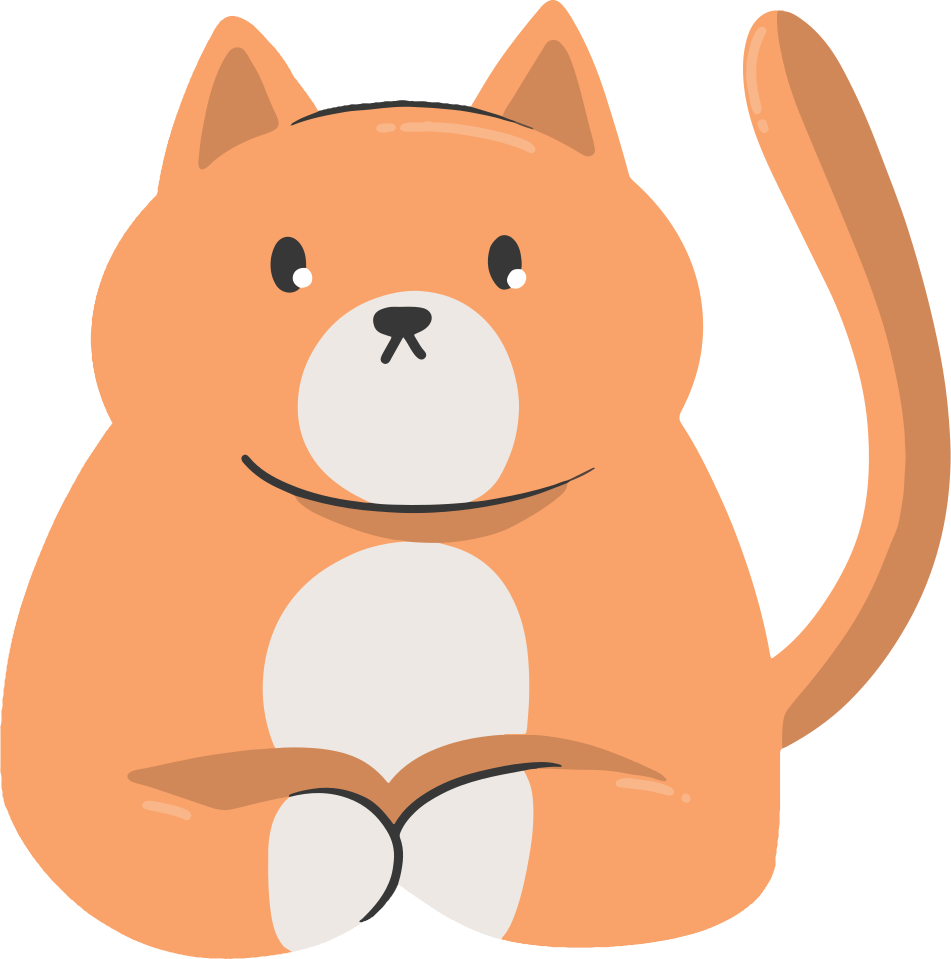
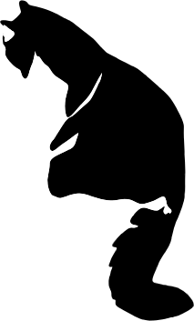
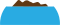

Le chat saute

*Survolez pour faire sauter le chat*
Le chat est très agile sur ses pattes. Il peut sauter jusqu'à 6 fois sa hauteur! Quel acrobate!
Le chat dort
Z Z Z
Les chats peuvent passer 70% de leur vie à dormir! Ce qui équivaut à approximativement 16 heures par jour! zzz
Le chat s'écrase

La colonne vertébrale du chat contient 54 os « flottants » ce qui fait qu'il est capable de plier son corps et se faufiler n'importe où.
Le chat mange

